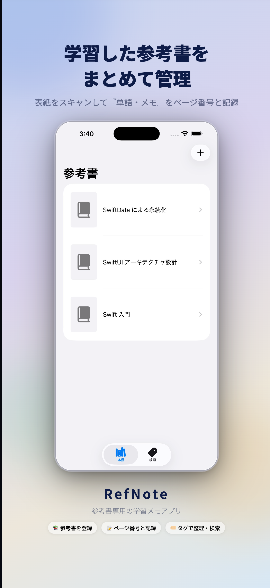
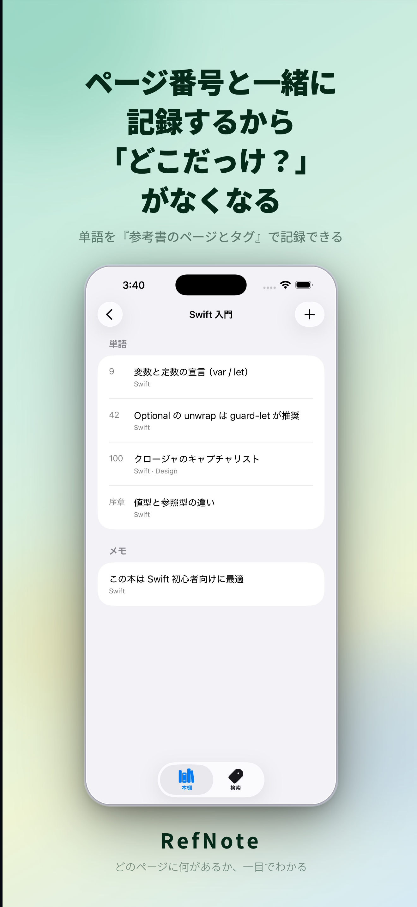
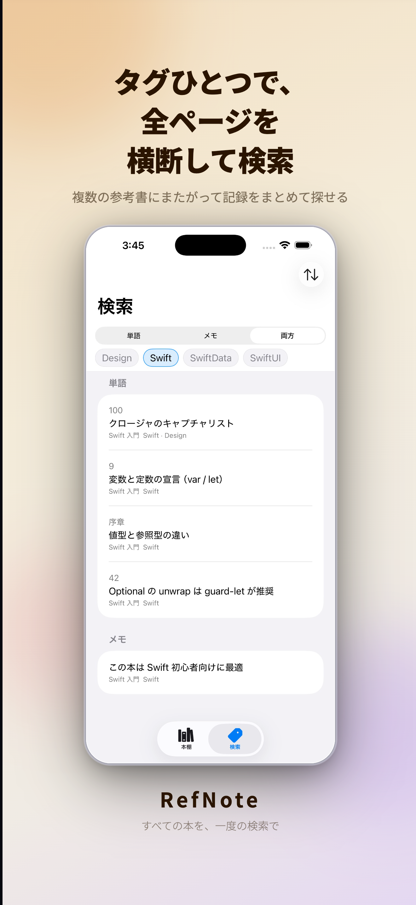
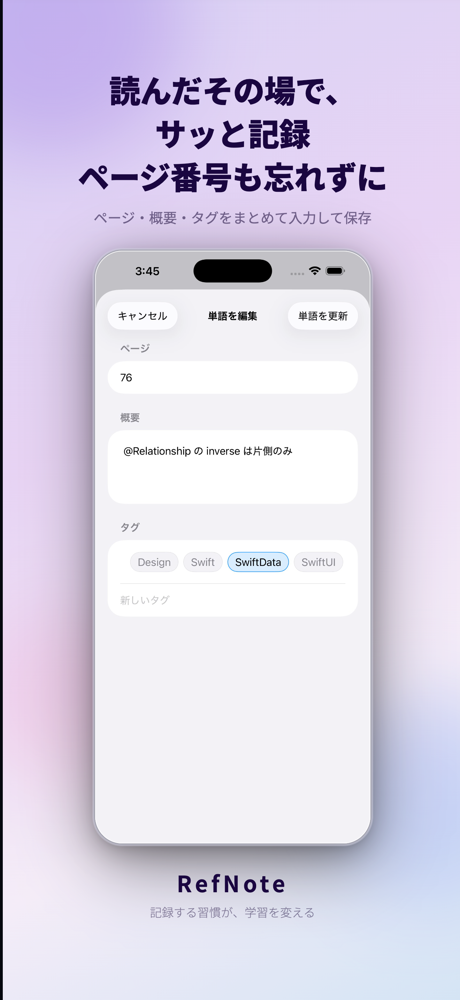

参考書メモアプリ
どの本の何ページに何が書いてあったか、すぐに引き出せる。 単語・メモ・タグで整理して、学習をもっとスマートに。
⬇ App Store でダウンロード



単語にはページ番号を付けて登録。あの本の何ページか、すぐわかる。
カメラで表紙を撮影するだけ。自動で補正・切り抜きしてサムネイル表示。
単語・メモに複数タグを付与。タグで絞り込んで素早く見つける。
データはすべて端末内に保存。クラウド不要、プライバシー安心。